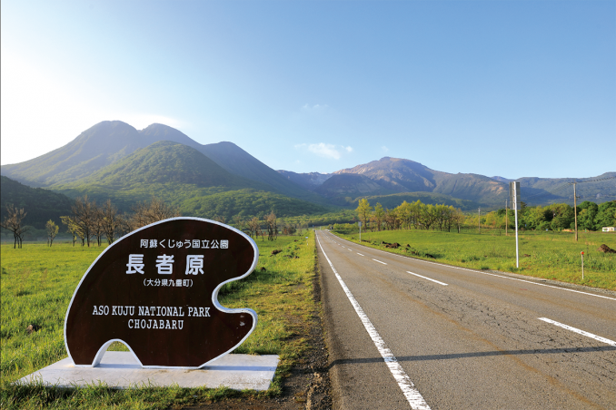
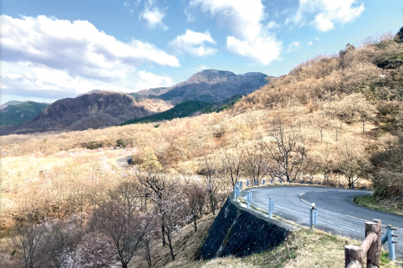
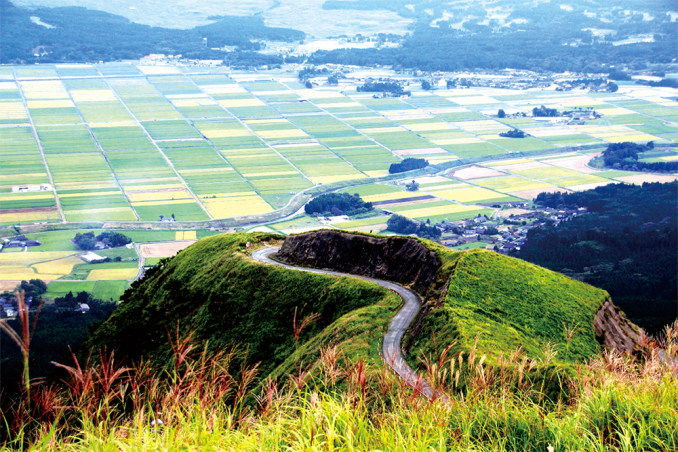

九州・沖縄編 - ツーリングスポット
やまなみハイウェイ

九州の壮大な自然と多様な景観を楽しめる爽快なルート。
おすすめポイント:
- 牧草地、森林、温泉地など、変化に富んだ風景が楽しめる。
- 阿蘇山や九重連山など、九州の雄大な自然景観を満喫できる。
- 九州ならではの美味しい食事処が多数あり、グルメも楽しめる。
アクセス情報:
- 起点：大分県別府市（別府温泉周辺）終点：熊本県阿蘇市（阿蘇山周辺）
- 最寄りIC: 東九州自動車道・別府IC、九州自動車道・熊本IC
- 駐車場: 無料駐車場あり(長者原ビジターセンター駐車場、阿蘇山駐車場など)
ケニーロード（グリーンロード南阿蘇）

阿蘇の美しい自然と爽快な走行感を満喫できるルート。
おすすめポイント:
- 整備された道路で、バイクや車での走行がスムーズ。
- 阿蘇の緑豊かな風景や、周囲の山々を楽しめる。
- 地元特産の美味しい食事処が点在し、観光とグルメを同時に楽しめる。
アクセス情報:
- 住所: 熊本県阿蘇市大字南阿蘇村
- 最寄りIC: 九州自動車道・宇土IC
- 駐車場: 無料駐車場あり
ミルクロード

静寂な山間を走る贅沢な時間と、美しい自然に囲まれた心地よいドライブを楽しめる。
おすすめポイント:
- 山間部を走る静かな道で、自然の中でリラックスしたドライブが楽しめる。
- 周辺にはトレッキングや自然体験ができるスポットがあり、アクティブな時間も過ごせる。
- 主要な観光地や温泉地へのアクセスが便利で、観光とドライブを一日で楽しめる。
アクセス情報:
- 住所: 熊本県阿蘇市
- 最寄りIC: 熊本インターチェンジ 熊本IC、益城熊本空港インターチェンジ 益城IC
- 駐車場: 無料駐車場あり(大観峰駐車場、阿蘇パノラマ駐車場)